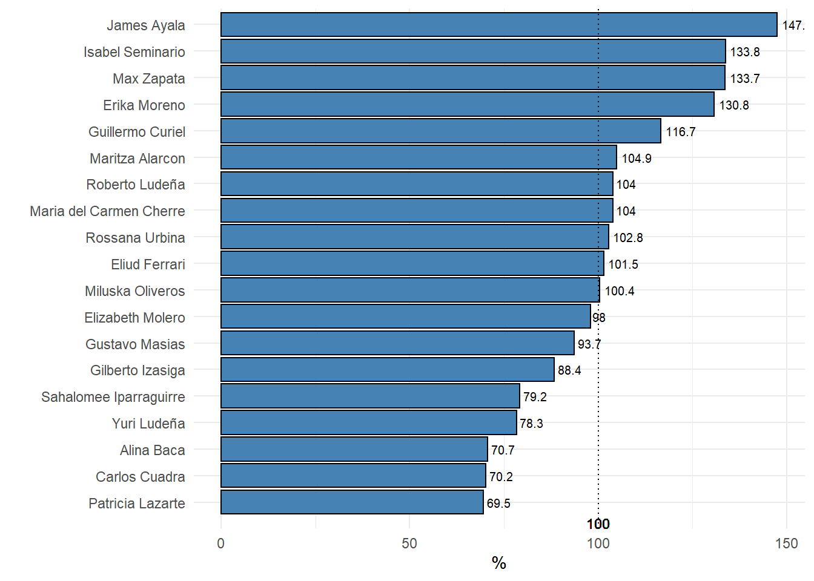

Informes generados por el área de análisis comercial.
| Fuente | Fecha de Actualización |
|---|---|
| LANSIER | 2022-02-25 |
| METRONIC | 2022-02-25 |
| DIFARLIB | 2022-02-26 |
| CASTILLO | 2022-02-26 |
| M&M | 2022-02-26 |
| DIMEXA | 2022-02-26 |
| Zona | Nombre | Total | Premium | Lanzamiento | Ocuvial | Normal | Masivo |
|---|---|---|---|---|---|---|---|
| RR MM Lima Azul | |||||||
| CALLAO | Maria del Carmen Cherre | 76.4 | 68.5 | NA | 104.8 | 118.7 | 53.3 |
| ESTE | Gilberto Izasiga | 89.9 | 107.2 | NA | 62.2 | 192.8 | 68.2 |
| NORTE | Isabel Seminario | 51.3 | 59.0 | NA | 110.2 | 66.2 | 37.3 |
| OESTE | Guillermo Curiel | 100.8 | 81.1 | NA | 139.4 | 107.5 | 76.8 |
| SUR | Rossana Urbina | 69.6 | 67.7 | NA | 35.4 | 127.2 | 64.3 |
| RR MM Lima Rojo | |||||||
| CALLAO | Erika Moreno | 66.1 | 34.6 | 87.3 | 134.3 | 130.2 | 53.3 |
| ESTE | Miluska Oliveros | 72.4 | 53.1 | 83.8 | 58.5 | 113.9 | 68.2 |
| NORTE | Max Zapata | 45.0 | 43.7 | 71.6 | 78.6 | 57.2 | 37.3 |
| OESTE | Maritza Alarcon | 93.0 | 102.7 | 112.0 | 57.0 | 154.6 | 76.8 |
| SUR | Eliud Ferrari | 79.0 | 72.3 | 93.9 | -8.1 | 175.5 | 64.3 |
| RR MM Provincias | |||||||
| NORTE GRANDE A | Gustavo Masias | 72.7 | 83.1 | 167.0 | 62.5 | 82.9 | 57.6 |
| NORTE GRANDE B | Yuri Ludeña | 71.9 | 63.8 | 48.6 | 81.6 | 85.2 | 72.8 |
| NORTE MEDIO | Carlos Cuadra | 49.7 | 102.0 | 94.8 | 113.2 | 90.6 | 25.1 |
| SUR GRANDE | Roberto Jimenez | 67.9 | 69.5 | 73.4 | 62.8 | 105.2 | 55.6 |
| SUR ORIENTE | Patricia Lazarte | 74.8 | 130.3 | 92.0 | 140.5 | 87.5 | 35.6 |
| VENDEDORES Lima | |||||||
| NORTE | James Ayala | 135.4 | 210.4 | 180.7 | 29.0 | 252.7 | 27.9 |
| CALLAO | Alina Baca | 86.8 | 62.8 | 12.1 | 105.7 | 87.5 | 117.5 |
| SUR | Sahalomee Iparraguirre | 89.4 | 66.1 | 107.9 | 121.3 | 148.3 | 74.3 |
| ESTE | Elizabeth Molero | 69.5 | 49.4 | 17.4 | 108.3 | 120.1 | 52.1 |
| 1 Los valores estan en porcentajes | |||||||
| Zona | Nombre | Total | Premium | Lanzamiento | Ocuvial | Normal | Masivo |
|---|---|---|---|---|---|---|---|
| RR MM Lima Azul | |||||||
| CALLAO | Maria del Carmen Cherre | 64,930 | 1,409 | NA | 763 | 2,670 | 2,510 |
| ESTE | Gilberto Izasiga | 53,108 | 4,351 | NA | 1,662 | 3,944 | 15,632 |
| NORTE | Isabel Seminario | 71,319 | 7,063 | NA | 2,843 | 668 | 14,182 |
| OESTE | Guillermo Curiel | 54,506 | 3,658 | NA | 88 | 0 | 395 |
| SUR | Rossana Urbina | 67,702 | 5,124 | NA | 573 | 4,069 | 7,888 |
| RR MM Lima Rojo | |||||||
| CALLAO | Erika Moreno | 77,920 | 2,728 | 672 | 305 | 1,826 | 2,510 |
| ESTE | Miluska Oliveros | 63,715 | 8,290 | 998 | 5,143 | 5,692 | 15,632 |
| NORTE | Max Zapata | 57,596 | 7,421 | 833 | 0 | 961 | 14,182 |
| OESTE | Maritza Alarcon | 30,719 | 166 | 0 | 366 | 152 | 395 |
| SUR | Eliud Ferrari | 68,839 | 6,818 | 3,298 | 0 | 4,801 | 7,888 |
| RR MM Provincias | |||||||
| NORTE GRANDE A | Gustavo Masias | 61,325 | 18,467 | 1,144 | 1,612 | 8,914 | 24,561 |
| NORTE GRANDE B | Yuri Lude?a | 107,514 | 18,510 | 2,921 | 4,470 | 8,672 | 58,280 |
| NORTE MEDIO | Carlos Cuadra | 122,329 | 17,821 | 1,557 | 7,188 | 10,842 | 71,395 |
| SUR GRANDE | Roberto Jimenez | 111,658 | 27,406 | 2,140 | 1,492 | 18,730 | 46,192 |
| SUR ORIENTE | Patricia Lazarte | 198,821 | 23,340 | 1,251 | 5,444 | 14,755 | 34,429 |
| VENDEDORES Lima | |||||||
| NORTE | James Ayala | NA | NA | NA | NA | NA | NA |
| CALLAO | Alina Baca | NA | NA | NA | NA | NA | NA |
| SUR | Sahalomee Iparraguirre | NA | NA | NA | NA | NA | NA |
| ESTE | Elizabeth Molero | NA | NA | NA | NA | NA | NA |
| 1 Los valores estan en soles | |||||||
